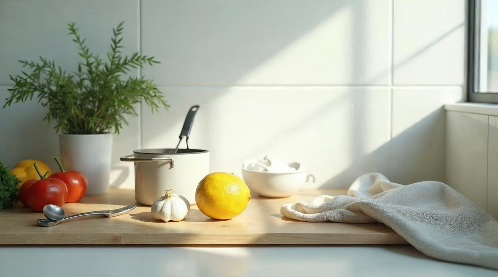
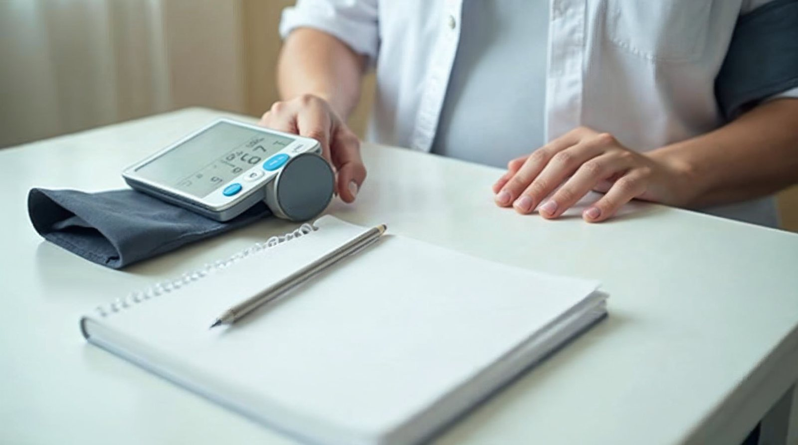

이종호 한의사 감수좋은꿈참사랑한의원 대표원장 (한의사 면허번호 19769)발행 2026-11-22 · 수정 2026-11-26
이 글의 차례
점심시간, 뚝배기에서 김이 오르는 순댓국 한 그릇을 앞에 두고 마지막 국물까지 숟가락으로 긁어 드시는 모습을 떠올려 봅니다. 그 국물이 하루 중 가장 위로가 되는 순간이라는 분도 계십니다. 저는 그 마음을 압니다. 그래서 짠 음식과 혈압 이야기를 할 때 "국물 드시지 마세요"라는 말부터 꺼내지 않으려고 합니다.
짠맛을 많이 드시는 습관은 혈압과 관련될 수 있는 것으로 알려져 있지만, 하루아침에 끊기보다 어디에서 소금을 가장 많이 드시는지 함께 찾고 그중 한 가지만 먼저 바꿔 보는 쪽이 오래간다고 생각합니다.
"저 그렇게 짜게 안 먹는데요"
진료실에서 이런 말씀을 자주 듣습니다. "원장님, 저는 소금을 따로 안 넣어요." 맞는 말씀입니다. 식탁에서 소금통을 드는 분은 생각보다 많지 않습니다.
그런데 하루 식사를 처음부터 차근차근 여쭤보면 이야기가 조금 달라집니다. 아침은 김치 몇 조각과 국에 밥을 말아 드시고, 점심은 회사 근처 찌개집, 오후에는 과자 한 봉지, 저녁은 배달 음식이나 라면. 어디에도 소금통은 나오지 않는데, 하루를 다 더해 보면 짠맛이 빠진 끼니가 거의 없습니다.
저는 이 대목에서 환자분을 탓하고 싶지 않습니다. 우리 밥상이 원래 그렇게 생겼습니다. 국과 찌개, 김치와 젓갈, 장아찌는 오랫동안 밥을 맛있게 먹게 해 준 음식들이고, 바쁜 직장인에게 국밥 한 그릇은 가장 빠르고 따뜻한 한 끼입니다. 문제는 그 음식 하나하나가 아니라, 짠 음식이 하루에 여러 번 겹치는 흐름에 있는 경우가 많습니다.
왜 짠 음식이 혈압과 이어질까요
소금을 많이 드시면 몸은 그 염분을 묽히려고 물을 더 붙잡아 두는 쪽으로 움직입니다. 혈관 안을 도는 양이 늘면 혈압이 오르는 쪽으로 작용할 수 있는 것으로 알려져 있습니다.
사람마다 소금에 반응하는 정도가 다르다고도 하니, 같은 음식을 드셔도 혈압이 크게 흔들리는 분이 있고 덜 흔들리는 분이 있습니다. 그래서 저는 "얼마나 짜게 드시나요"와 함께 "집에서 재 보면 혈압이 어떤 흐름인가요"를 꼭 같이 여쭙니다.
소금이 숨어 있는 자리는 대개 이렇습니다.
- 국·찌개·면 요리의 국물, 그리고 김치·젓갈·장아찌 같은 저장 반찬
- 라면, 햄, 소시지, 어묵 같은 가공식품과 배달 음식의 양념·소스
여기에 한 가지가 더 있습니다. 짠맛은 익숙해지는 맛입니다. 짜게 먹던 입에는 싱거운 음식이 밍밍하게 느껴지고, 그러면 양념을 조금 더 넣게 됩니다. 몸이 원해서라기보다 입이 그 맛을 기억해서입니다. 반대로 말하면, 천천히 줄이면 입맛도 따라 바뀔 여지가 있다는 뜻이기도 합니다.
늦은 저녁, 술과 함께 드시는 짭짤한 안주, 잠이 모자란 날이 겹치면 혈압 관리가 더 어려워지기도 합니다. 그래서 저는 소금 이야기만 따로 떼어 하지 않고, 그 음식을 드신 시간과 그날의 피로까지 같이 듣습니다.
진료실에서 자주 만나는 모습들
실제 어느 한 분의 이야기는 아니고, 진료실에서 여러 번 비슷하게 듣게 되는 모습들을 묶어 본 것입니다.
점심을 거의 매일 국밥이나 찌개로 드시는 직장인이 계십니다. 점심시간이 짧고 메뉴를 고를 여유도 없으니 가장 빨리 나오는 것을 드시게 됩니다.
이런 분께 "점심 메뉴를 바꾸세요"라고 하면 대개 일주일을 못 갑니다. 그래서 저는 메뉴는 그대로 두고, 국물을 절반만 드시는 것과 김치 양을 정해 두는 것 가운데 하나만 골라 보자고 말씀드립니다. 무엇을 고르실지는 그분께 맡깁니다. 본인이 고른 것이 더 오래가기 때문입니다.
혼자 사시면서 라면과 배달 음식이 잦은 분도 계십니다. 퇴근하고 들어오면 요리할 힘이 없다고 하십니다. 그 말이 참 솔직하게 들립니다.
이런 분께는 라면 수프를 절반만 넣고 냉동 채소나 달걀을 더하는 방법, 배달 음식은 소스를 따로 받아 찍어 드시는 방법을 이야기합니다. 그것도 어려운 날이 있다는 것까지 미리 말씀드립니다. 못 지킨 날이 있다고 계획 전체가 무너지는 것은 아니니까요.
집밥은 싱겁게 드시는데 젓갈과 장아찌를 좋아하시는 어르신도 자주 뵙습니다. "다른 건 다 싱거워요, 이거 하나 먹는 낙인데" 하시면 저도 웃게 됩니다. 이럴 때는 짠 반찬을 끊자고 하지 않고, 한 끼 밥상에 짠 반찬은 한 가지만 올리자고 함께 정합니다. 오늘 젓갈을 드셨으면 장아찌는 내일로 미루는 식입니다.
가족 밥상을 차리는 분의 고민도 있습니다. 본인은 싱겁게 드시고 싶은데 식구들이 "오늘 국이 왜 이렇게 밍밍해" 하면 다시 간을 하게 된다고 하십니다.
이럴 때는 국을 끓일 때 간을 조금 덜 하고, 식탁에 소금이나 간장을 따로 두어 각자 맞춰 드시게 하는 방법을 권합니다. 한 냄비로 온 가족의 입맛을 다 맞추려다 보면 결국 가장 짠 입맛에 맞춰지기 쉽습니다.
먼저 이렇게 여쭙니다
처음 뵈면 저는 대략 이런 순서로 여쭙습니다.
- 국과 찌개, 면 요리의 국물까지 다 드시는지
- 외식과 배달 음식, 가공식품은 일주일에 몇 번쯤인지
- 김치와 젓갈, 장아찌는 한 끼에 얼마나 드시는지
- 음식을 맛보기도 전에 간장이나 소금을 더 넣으시는지
- 집에서 혈압을 재 보신 적이 있는지
이 질문들에 정답이 있는 것은 아닙니다. 저는 그 대답을 듣고 소금이 어느 끼니에 몰려 있는지 지도를 그려 보는 것뿐입니다. 아침에 몰려 있는 분도 있고, 저녁 술자리에 몰려 있는 분도 있습니다. 그 지도가 그려져야 어디부터 손을 댈지 함께 정할 수 있습니다.

오늘부터 해 볼 수 있는 것
거창한 식단표보다 하루에 한두 가지를 바꾸는 쪽을 권합니다. 제가 진료실에서 가장 자주 말씀드리는 것들을 순서대로 적어 봅니다.
먼저 국물입니다. 국과 찌개는 큰 냄비째 떠 드시지 말고 작은 그릇에 덜어 드셔 보세요. 그릇에 담긴 국물 양이 눈에 보이면 건더기 위주로 드시고 국물은 남기기가 조금 쉬워집니다. 처음부터 다 남기기 어려우면 절반만 남겨도 충분한 시작입니다.
다음은 양념과 소스입니다. 부어 드시지 말고 따로 찍어 드시는 습관만 들여도 드시는 양이 꽤 달라집니다. 배달 음식을 시킬 때 소스를 따로 달라고 하는 것, 회나 전을 드실 때 간장을 작은 접시에 조금만 따르는 것도 같은 방법입니다.
라면은 수프를 절반만 넣고, 대신 양파나 대파, 버섯, 달걀처럼 풍미를 더하는 재료를 넣어 보세요. 짠맛이 줄어든 빈자리를 다른 맛이 채워 주면 덜 허전합니다. 가공식품을 사실 때는 포장 뒷면의 나트륨 표시를 한 번쯤 보시는 것도 도움이 됩니다. 비슷한 제품끼리도 차이가 꽤 나는 경우가 있습니다.
싱거운 맛이 허전하다면 식초, 레몬즙, 들기름, 깨, 후추, 마늘, 생강처럼 짠맛이 아닌 향과 신맛을 빌려 오세요. 채소와 과일을 함께 늘리는 것도 일반적으로 권하는 방법이지만, 신장 질환이 있으신 분은 칼륨 섭취를 조심해야 할 수 있으니 담당 의사와 먼저 상의하시기 바랍니다.
그리고 집에서 혈압을 재 보시면 좋겠습니다. 아침에 일어나 화장실을 다녀온 뒤 앉아서 잠시 쉬었다가 한 번, 저녁 잠들기 전에 한 번. 같은 시간, 같은 자세로 재서 적어 두시면 하루하루의 숫자보다 흐름이 보입니다. 조금씩 오르내리는 숫자 하나하나에 크게 놀라실 필요는 없습니다. 일주일, 이주일을 모아 보는 게 중요합니다.
처음 며칠이 가장 힘듭니다. 많은 분들이 2~3주쯤 지나면 싱거운 맛에 조금씩 익숙해졌다고 말씀하십니다. 어느 날 예전에 즐겨 드시던 찌개가 너무 짜게 느껴졌다는 이야기를 들으면 저도 조용히 반갑습니다.
외식과 회식 자리에서는 조금 다르게 생각해 보시면 좋습니다. 찌개나 전골이 가운데 놓이는 자리라면 국물보다 건더기를 앞접시에 덜어 드시고, 젓갈이나 장아찌 같은 밑반찬은 한두 번만 손이 가도록 내 앞에서 조금 떨어뜨려 두세요.
국물 안주를 시키는 대신 구이나 숙회를 고르는 것, 짠 안주와 함께라면 물을 한 잔씩 곁들이는 것도 방법입니다. 다음 날 아침에 얼굴이 붓고 몸이 무겁다면 그날은 아침 밥상을 조금 더 싱겁게 차려 보시면 됩니다.
서운한 마음이 드실 때
"이제 먹는 낙도 없겠네요." 이 말씀을 들으면 저도 마음이 조금 무거워집니다. 하루 종일 일하고 들어와서 뜨끈한 찌개 한 숟가락 뜨는 일이 얼마나 큰 쉼인지 알기 때문입니다.
그래서 저는 좋아하시는 음식을 목록에서 지우자고 하지 않습니다. 대신 언제, 얼마나 드실지를 같이 정합니다. 주말 한 끼는 마음 편히 좋아하시는 국밥을 드시고, 평일에는 국물을 남기는 식으로요.
지키지 못한 날이 있어도 괜찮습니다. 다음 끼니에서 다시 시작하시면 됩니다. 저는 완벽하게 지킨 한 주보다, 무너졌다가 다시 돌아온 한 주가 더 오래가는 것을 자주 봅니다.
한의원에서 함께 살필 수 있는 경우
혈압의 진단과 약 처방은 내과의 몫입니다. 저는 그 바깥에서, 혈압 숫자를 둘러싼 하루의 모습을 같이 살펴드리고 싶습니다. 이런 분들과는 함께 이야기해 볼 것이 많습니다.
- 식사 시간이 불규칙하고 유난히 짜고 자극적인 음식이 당기시는 분이라면 끼니 간격과 식욕이 강해지는 시간을 함께 봅니다.
- 몸이 쉽게 붓고 아침에 얼굴이 무겁다는 분께는 수분과 순환, 그리고 잠을 같이 여쭙니다.
- 스트레스가 쌓이면 짜고 매운 음식부터 찾게 된다는 분도 많습니다. 긴장이 식욕으로 이어지는 흐름은 의지만으로 끊기 어려워서, 그 흐름이 언제 시작되는지부터 함께 찾아봅니다.
처음 오시면 이렇게 진료합니다
좋은꿈참사랑한의원에 처음 오시면, 저는 먼저 하루 식사 모습과 집에서 재 오신 혈압 기록을 봅니다. 필요하다고 판단되면 진료실에서도 혈압과 맥박을 다시 잽니다. 그다음에 양손을 올려 달라고 말씀드리고 왼쪽, 오른쪽 손목을 차례로 짚습니다.
맥을 짚는 동안에는 잠은 어떻게 주무시는지, 자다가 깨시는지, 식사 뒤 속은 편한지, 몸이 찬 편인지 더운 편인지를 여쭙니다. 혈압 이야기로 오셨는데 왜 잠과 소화를 묻는지 의아해하시는 분도 계십니다. 제게는 그 대답들이 혈압 숫자가 나온 하루를 이해하는 실마리가 됩니다.
필요하다고 판단되면 혀를 보거나, 인바디 770으로 체성분과 체수분의 흐름을 기록해 두기도 합니다. 그런 다음 오늘부터 해 볼 한 가지를 같이 정하고, 상태에 따라 침이나 한약 상담을 함께 이야기합니다. 혈압이 높다는 말을 처음 들으셨거나 계속 높게 나온다면 내과 진료를 먼저 받으시도록 안내합니다.
다시 오시면 지난번에 정한 한 가지가 어땠는지부터 여쭙고, 지키기 어려웠다면 그 사정을 먼저 듣습니다. 그다음 한 가지는 그 이야기를 들은 뒤에 정합니다.
얼마나 지켜보고, 언제 내과에 가야 할까요
집에서 잰 혈압은 하루 한두 번, 같은 시간에 1~2주 정도 적어 보시면 흐름을 보기 좋습니다. 일반적으로 진료실 혈압 기준으로 140/90mmHg 이상이면 고혈압 범위로 보고, 130/80mmHg 언저리부터 주의를 권하는 지침도 있습니다. 다만 기준은 지침과 측정 방법에 따라 조금씩 다르니 참고로만 보시고, 판단은 내과에서 받으시기 바랍니다.
집에서 잰 혈압이 계속 높게 나오거나 검진에서 처음 높다는 말을 들으셨다면, 기다리지 마시고 내과 진료를 먼저 받으세요. 이미 혈압약을 드시는 중이라면 식사를 바꾸시더라도 약은 처방한 의사와 상의 없이 줄이거나 끊지 않으셔야 합니다. 생활 관리는 약을 대신하는 것이 아니라 약과 함께 가는 것이라고 말씀드리곤 합니다.

이렇게 기록해 오시면 상담이 쉬워집니다
거창한 일지는 필요 없습니다. 사흘 동안 드신 국·찌개·면 요리와 외식 횟수, 집에서 잰 아침·저녁 혈압, 붓기가 느껴지는 시간대, 그리고 복용 중인 약과 신장 질환 여부 정도면 충분합니다. 휴대폰 메모장에 한 줄씩 적어 오셔도 좋습니다. 적다 보면 본인도 몰랐던 습관이 보였다고 하시는 분이 많습니다.
이런 증상은 먼저 확인이 필요합니다
- 갑자기 심한 두통이 오거나 앞이 흐려지는 경우
- 말이 어눌해지거나 한쪽 팔다리에 힘이 빠지는 경우
- 가슴이 아프고 숨이 차는 경우
- 집에서 잰 혈압이 매우 높게 반복해서 나오는 경우
이런 경우에는 생활 관리보다 진료가 먼저입니다. 갑자기 심한 두통이나 시야 이상이 오거나, 말이 어눌해지거나 한쪽 팔다리에 힘이 빠지거나, 가슴이 아프고 숨이 차면 한의원 진료를 기다리지 말고 가까운 응급실로 가세요.
혈압이 매우 높게 반복해서 나온다면 내과 진료를 먼저 받으세요. 혈압약은 처방한 의사와 상의 없이 줄이거나 끊지 않습니다.
짠맛을 줄이는 일은 좋아하는 것을 빼앗기는 일처럼 느껴질 수 있습니다. 그래서 저는 빼는 이야기보다, 국물 반 그릇을 남기고도 든든하게 드시는 방법을 함께 찾는 이야기를 하고 싶습니다. 다음에 오시면 그 한 그릇이 어땠는지 들려주세요.
함께 읽으면 좋은 글
- 혈압이 높다는 말을 듣고 동네 언덕길 걷기를 시작하려 할 때
- 건강검진 결과지에서 대사증후군은 어떤 항목을 보나요?
- 편의점 도시락·라면으로 끼니를 때우는 날이 많을 때

여쭙는 것
- 국과 찌개, 면 요리의 국물까지 다 드시는지
- 외식과 배달 음식, 가공식품은 일주일에 몇 번쯤인지
- 김치와 젓갈, 장아찌는 한 끼에 얼마나 드시는지
한의원에서 함께 살필 것
- 식사 시간이 불규칙하고 유난히 짜고 자극적인 음식이 당기시는 분이라면 끼니 간격과…
- 몸이 쉽게 붓고 아침에 얼굴이 무겁다는 분께는 수분과 순환, 그리고 잠을 같이 여쭙…
- 스트레스가 쌓이면 짜고 매운 음식부터 찾게 된다는 분도 많습니다. 긴장이 식욕으로…
먼저 확인이 필요한 신호
- 갑자기 심한 두통이 오거나 앞이 흐려지는 경우
- 말이 어눌해지거나 한쪽 팔다리에 힘이 빠지는 경우
- 가슴이 아프고 숨이 차는 경우
한눈에 보는 표
| 구분 | 핵심 |
|---|---|
| 여쭙는 것 | 국과 찌개, 면 요리의 국물까지 다 드시는지 외식과 배달 음식, 가공식품은 일주일에 몇 번쯤인지 |
| 한의원에서 함께 살필 것 | 식사 시간이 불규칙하고 유난히 짜고 자극적인 음식이 당기시는 분이라면 끼니 간격과 식욕이 강해지는 시간을 함께 봅니다. 몸이 쉽게 붓고 아침에 얼굴이 무겁다는 분께는 수분과 순환, 그리고 잠을 같이 여쭙니다. |
| 먼저 확인이 필요한 신호 | 갑자기 심한 두통이 오거나 앞이 흐려지는 경우 말이 어눌해지거나 한쪽 팔다리에 힘이 빠지는 경우 |
자주 묻는 질문
혈압이 높으면 소금을 완전히 끊어야 하나요?
완전히 끊기보다 조금씩 줄이는 방법을 함께 정합니다. 국물 절반 남기기처럼 지킬 수 있는 것 하나부터 시작하는 편이 오래갑니다. 신장 질환 등 지병이 있다면 담당 의사와 상의하세요.
싱겁게 먹으면 맛이 없어요.
처음 며칠이 가장 힘듭니다. 식초, 레몬, 들기름, 마늘, 허브처럼 짠맛 대신 풍미를 더하는 재료를 쓰면 적응이 조금 쉬워지고, 2~3주쯤 지나면 입맛이 따라오는 분이 많습니다.
혈압약을 줄여도 되나요?
약은 임의로 끊거나 줄이지 말고 처방한 의사와 상의하세요. 식사 관리는 약과 함께 가져가는 것입니다.
붓기가 있으면 물을 덜 마셔야 하나요?
붓기의 원인은 여러 가지라 물부터 줄이기보다 짠 음식, 잠, 활동량을 먼저 살핍니다. 심장이나 신장 질환이 있다면 담당 의사의 안내를 따르세요.
집에서 혈압은 언제 재는 게 좋나요?
아침에 일어나 화장실을 다녀온 뒤 앉아서 잠시 쉬었다가 한 번, 잠들기 전에 한 번 재는 방법을 많이 씁니다. 같은 시간, 같은 자세로 1~2주 기록해 오시면 흐름을 보기 좋습니다.
좋은꿈참사랑한의원은 재진 때 지난번 이야기부터 이어서 여쭙니다. 진료시간과 예약은 오시는 길에서 확인하세요.
어디서 상담받을 수 있나요?
좋은꿈참사랑한의원은 서울 동작구 만양로2길 2 신성빌딩 3층·5층(서울 동작구 상도동, 7호선 상도역 3번 출구 근처)에 있습니다. 한의사 3명(이종호 대표원장, 조영기 수석진료원장, 정원영 진료원장)이 진료합니다. 진료시간은 평일 09:30~20:00(점심 13:00~14:00), 토·일·공휴일 09:30~15:00이며, 방문 전 전화로 확인을 권합니다. 예약은 네이버 예약, 카카오톡 상담, 전화 02-815-7510로 받습니다.
이 글은 일반적인 건강 정보이며 개인의 진단이나 치료를 대신하지 않습니다. 증상이 있거나 복용 중인 약이 있다면 진료를 통해 확인하세요. 치료 효과는 개인마다 다를 수 있습니다.
작성 기준: 일반적으로 알려져 있는 건강 정보를 참고해 정리했습니다(대표원장 감수). 증상 기록은 1~2주 동안 하루 1회, 비슷한 시간에 적어 오시면 지난 상태와 비교하기 쉽습니다.